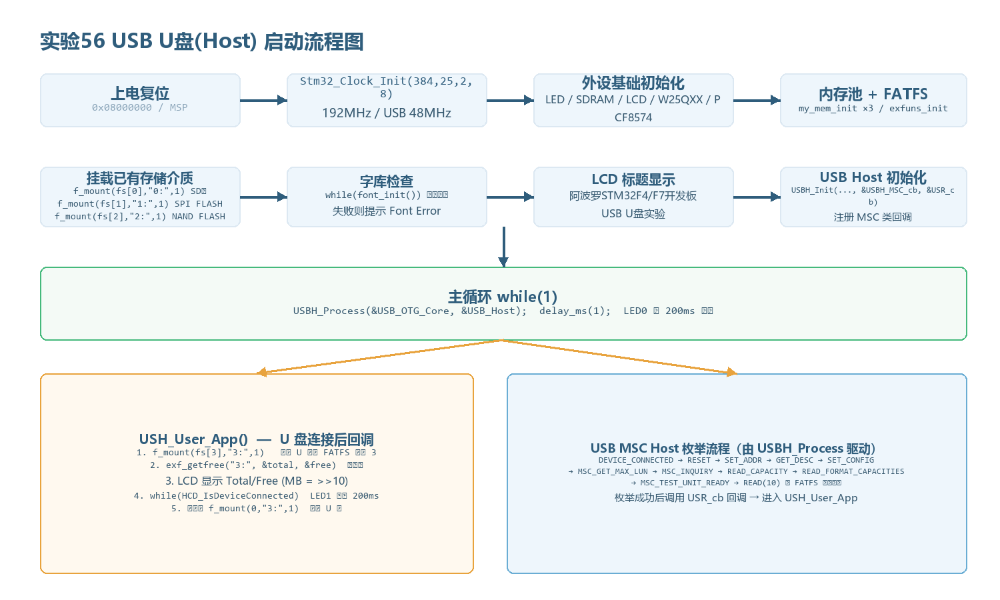
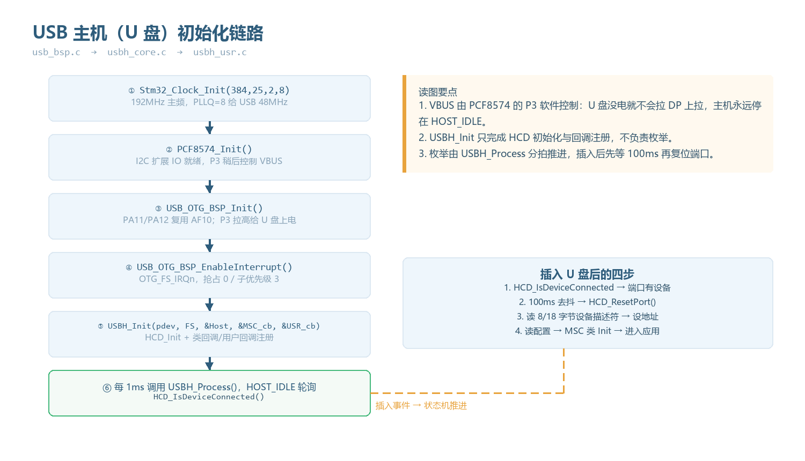
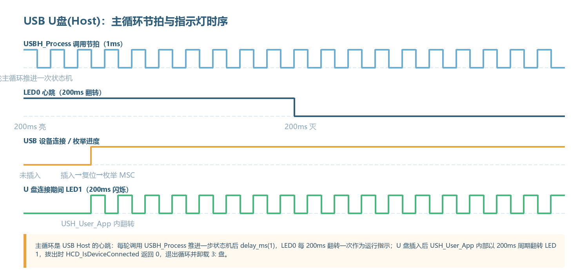
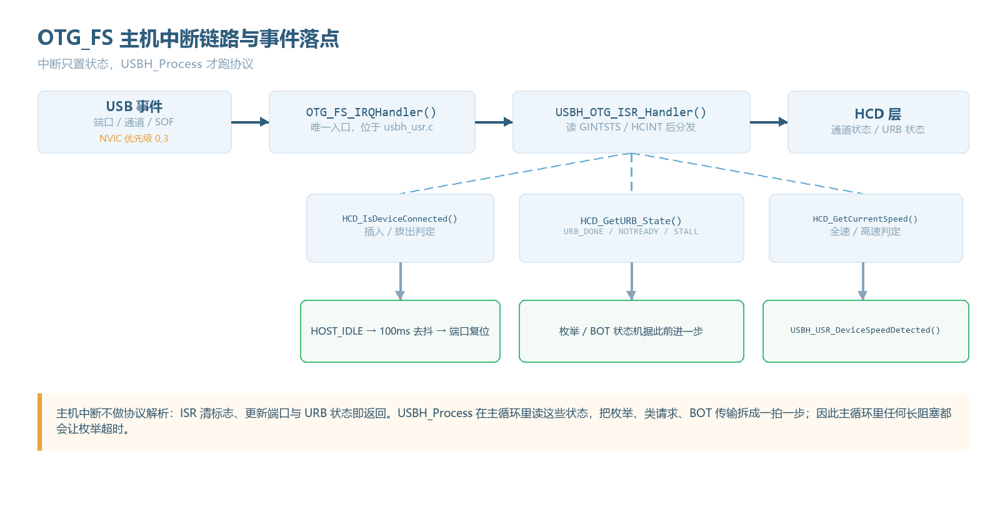
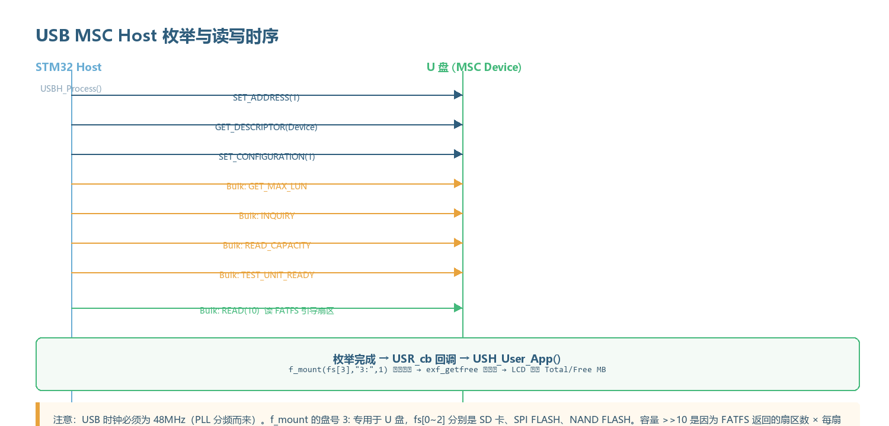

01 实验目标与硬件资源
STM32F429 做 USB 主机，枚举 U 盘、跑通 BOT 协议，再由 FATFS 读出容量
本实验把 OTG_FS 切换为主机（Host）角色，插入普通 U 盘后完成端口复位、枚举、MSC 类初始化，最后通过 FATFS 的 f_mount + exf_getfree 读出总容量与剩余容量并显示在 LCD 上。与 index69 的虚拟串口正好相反：那里是“被 PC 枚举”，这里是“去枚举别人”。
主机与从机在代码上的第一个分水岭是供电：设备侧靠 PC 提供 5V，主机侧必须自己给 U 盘供 5V。本板用 PCF8574 的 P3 口控制 USB HOST 电源，USB_OTG_BSP_Init 里一句 PCF8574_WriteBit(USB_PWR_IO,1) 就是“打开 VBUS”，少了它，U 盘插入后连端口连接都检测不到。
| 对比项 | 实验56 U 盘（本页） | 实验55 虚拟串口 | 实验57 鼠标键盘 |
|---|---|---|---|
| USB 角色 | Host | Device | Host |
| 设备类 | MSC，class 0x08 + protocol 0x50 | CDC / ACM，class 0x02 | HID，class 0x03 |
| VBUS | PCF8574 P3 输出高，给 U 盘供电 | 不需要 | 同样需要 |
| 数据方向 | 主机发起 IN/OUT，批量端点搬扇区 | 主机发起，设备被动应答 | 主机周期轮询中断端点 |
| 上层协议 | BOT（CBW / Data / CSW）+ SCSI | CDC 类请求 + 批量数据 | HID 报告描述符 + Boot 协议 |
引脚与片内资源
| 资源 | 引脚 / 参数 | 说明 |
|---|---|---|
| OTG_FS_DM / DP | PA11 / PA12，AF10 | 主机模式下由内核驱动差分收发 |
| USB 电源控制 | PCF8574 P3（USB_PWR_IO=3） | I2C 扩展 IO，地址 0x40，高电平给 U 盘上电 |
| USB 时钟 | 48MHz（PLLQ=8） | 192MHz 主频下 384/8 |
| 速率 | 全速 12Mbps | 枚举时打印“全速(FS)USB设备!” |
| 文件系统 | FATFS，盘符 3: | 0:SD 卡、1:SPI Flash、2:NAND、3:U 盘 |
| 调试串口 | USART1，115200-8-N-1 | 打印 VID/PID、厂商、产品、枚举结果 |
| 指示 | DS1 / DS0 | DS1：连接期间闪烁；DS0：主循环 200ms 翻转 |
PA11 / PA12 → AF10
PCF8574 P3 → VBUS
MSC class 0x08
BOT protocol 0x50
扇区 512B
盘符 3:
U 盘一定要用“真 U 盘”或能被
USBH_MSC_Read10 正常应答的读卡器；部分带复合功能（U 盘 + CD-ROM）的设备 maxLun > 0，本工程会直接回调 DeviceNotSupported() 并打印“无法识别的USB设备”。02 目录与文件分工
USB 主机库分 Core 与 Class 两层，用户应用只有 usbh_usr.c 一个文件
| 文件 | 职责 | 本页关注点 |
|---|---|---|
USER/main.c | 初始化板级外设、启动主机、主循环轮询 | USH_User_App：挂载 U 盘、读容量 |
USB/USB_APP/usb_bsp.c | OTG 引脚、VBUS 上电、NVIC | PCF8574_WriteBit(USB_PWR_IO,1) |
USB/USB_APP/usbh_usr.c | 用户回调表 + OTG_FS_IRQHandler + FATFS 桥接 | 枚举日志、USBH_UDISK_Read |
USB/USB_APP/usbh_conf.h | 主机库裁剪参数 | 端点 3、接口 2、USBH_MAX_DATA_BUFFER=0x400 |
Core/src/usbh_core.c | 主机状态机 USBH_Process 与枚举状态机 | HOST_IDLE → HOST_CLASS 的跳转 |
Core/src/usbh_stdreq.c | 标准请求：取描述符、设地址、设配置 | 8 字节首读与全量读 |
Core/src/usbh_hcs.c | HCD 通道申请/打开/修改 | 控制通道与批量通道 |
Class/MSC/src/usbh_msc_core.c | MSC 类初始化与类状态机 | GET_MAX_LUN / TEST_UNIT_READY |
Class/MSC/src/usbh_msc_scsi.c | SCSI 命令封装 | USBH_MSC_Read10 |
Class/MSC/src/usbh_msc_bot.c | BOT 传输状态机 | CBW → Data → CSW |
FATFS/src/diskio.c | 把 FATFS 的盘读写路由到 U 盘接口 | pdrv=3 分支 |
CORE/startup_stm32f429xx.s | 栈堆、向量表、弱中断 | OTG_FS_IRQHandler 被覆盖 |
三个目录的边界很清晰：
Core 只懂 USB 协议，Class/MSC 只懂 U 盘命令，USB_APP 才和板级、FATFS 打交道。排障时先判断“卡在哪一层”，再去看对应目录。03 启动流程总览
先点亮能显示的东西，再启动主机；主机初始化只做注册，枚举全靠轮询

int main(void)
{
u8 t;
Stm32_Clock_Init(384,25,2,8); // 设置时钟,192Mhz；PLLQ=8 给 USB 48MHz
delay_init(192); // 初始化延时函数
uart_init(115200); // 初始化USART，printf 调试通道
usmart_dev.init(96); // USMART 调试组件，可用串口调用函数
LED_Init(); // 初始化LED
SDRAM_Init(); // 初始化SDRAM（LCD 显存 + 外部内存池）
LCD_Init(); // 初始化LCD
W25QXX_Init(); // 初始化W25Q256，字库放在这里
PCF8574_Init(); // 初始化PCF8574，后面用它给USB供电
my_mem_init(SRAMIN); // 内部内存池
my_mem_init(SRAMEX); // 外部内存池
my_mem_init(SRAMCCM); // CCM 内存池
exfuns_init(); // 为fatfs相关变量申请内存
f_mount(fs[0],"0:",1); // 挂载SD卡
f_mount(fs[1],"1:",1); // 挂载SPI FLASH
f_mount(fs[2],"2:",1); // 挂载NAND FLASH
POINT_COLOR=RED;
while(font_init()) // 检查字库，失败则闪屏提示
{
LCD_ShowString(60,50,200,16,16,"Font Error!");
delay_ms(200);
LCD_Fill(60,50,240,66,WHITE);
delay_ms(200);
}
Show_Str(30,50,200,16,"阿波罗STM32F4/F7开发板",16,0);
Show_Str(30,70,200,16,"USB U盘实验",16,0);
Show_Str(30,90,200,16,"2016年1月24日",16,0);
Show_Str(30,110,200,16,"正点原子@ALIENTEK",16,0);
Show_Str(30,140,200,16,"设备连接中...",16,0);
//初始化USB主机
USBH_Init(&USB_OTG_Core,USB_OTG_FS_CORE_ID,&USB_Host,&USBH_MSC_cb,&USR_cb);
while(1)
{
USBH_Process(&USB_OTG_Core, &USB_Host);// 主机状态机，必须被周期性调用
delay_ms(1);
t++;
if(t==200)
{
LED0=!LED0;// 约 200ms 翻转一次，提示主循环在跑
t=0;
}
}
}
关键逻辑说明
- PCF8574 必须早于 USBH_Init：VBUS 上电发生在
USB_OTG_BSP_Init里，而它由USBH_Init调用；如果 PCF8574 没初始化，I2C 写会失败，U 盘永远不上电。 - 先挂载 0/1/2 再挂 3：
exfuns_init一次性为四个盘符申请 FATFS 工作区，U 盘在第 4 个槽位（fs[3]），所以插入后才用f_mount(fs[3],"3:",1)重新挂载。 - 字库检查可能死循环：
font_init读不到 W25Q256 里的字库时会一直闪 “Font Error!”，程序永远到不了 USB 初始化——这是“上电不识别 U 盘”的常见假象，先确认字库正常。 USBH_Init是 5 个参数：除了内核句柄与 CORE_ID，还要传入主机对象&USB_Host、类回调&USBH_MSC_cb、用户回调&USR_cb；这与 ST 原版 3 参数接口不同，是本板移植版的特征。- 主循环不能有长阻塞：
USBH_Process每个状态推进一次就返回，靠 1ms 的节拍反复调用；如果这里插入delay_ms(500)，枚举超时计数会被拖垮。 - DS1 与 DS0 分工：DS1 由应用层在“连接成功”后开始闪烁，DS0 由主循环固定 200ms 翻转，二者都不参与协议。
04 启动文件与向量表
栈 1KB、堆 512B；OTG_FS 中断在 startup 里是弱符号，由 usbh_usr.c 覆盖
Stack_Size EQU 0x400; ; 1KB 栈：枚举过程中控制传输的局部变量都在这 AREA STACK, NOINIT, READWRITE, ALIGN=3 Stack_Mem SPACE Stack_Size __initial_sp ; 向量表第 0 项 Heap_Size EQU 0x200; ; 512B 堆 Reset_Handler PROC EXPORT Reset_Handler [WEAK] IMPORT SystemInit IMPORT __main LDR R0, =SystemInit BLX R0 ; 开 FPU、复位 RCC、设 VTOR LDR R0, =__main BX R0 ; C 库启动 → main ENDP DCD OTG_FS_IRQHandler ; USB OTG FS EXPORT OTG_FS_IRQHandler [WEAK] ; 弱定义，C 侧强符号优先 OTG_FS_IRQHandler B .
关键逻辑说明
- 1KB 栈要省着用：
USBH_Process的调用链是 Process → HandleEnum → Get_DevDesc → 控制传输，局部缓冲区Local_Buffer[64]在枚举函数里，栈深可控；但若在中断里再加 256B 数组就会逼近上限。 - 堆不由主机库使用：MSC 的缓冲区是静态的（
MSC_Machine.buff、USBH_MSC_CSWData），512B 堆主要留给 FATFS 的exfuns_init之外的零散申请。 - 向量表偏移为 0：
SystemInit里SCB->VTOR = FLASH_BASE | VECT_TAB_OFFSET，本工程没有做 IAP 偏移，所以OTG_FS_IRQHandler直接落在 0x08000000 起的表项上。 - 中断入口只有一个：主机库把端口事件、通道事件、SOF 全部收敛到
USBH_OTG_ISR_Handler，因此 startup 里也只保留一个 OTG_FS 表项。 B .是最后防线：如果用户忘了实现某个中断，弱函数会让 CPU 原地循环而不是乱跳；调试时看到程序“停住”，先查是不是进了未实现的中断。
05 SystemInit 与 HAL_Init
FPU、RCC 复位、优先级分组 2、1ms 时基，四件事在 main 之前或第一行完成
void SystemInit(void)
{
#if (__FPU_PRESENT == 1) && (__FPU_USED == 1)
SCB->CPACR |= ((3UL << 10*2)|(3UL << 11*2));/* 开 CP10/CP11，浮点指令才不报错 */
#endif
RCC->CR |= (uint32_t)0x00000001; /* HSI 打开 */
RCC->CFGR = 0x00000000; /* 时钟源回 HSI */
RCC->CR &= (uint32_t)0xFEF6FFFF; /* 关 HSEON / CSSON / PLLON */
RCC->PLLCFGR = 0x24003010; /* PLL 复位值 */
RCC->CR &= (uint32_t)0xFFFBFFFF; /* 清 HSEBYP */
RCC->CIR = 0x00000000; /* 关 RCC 中断 */
SCB->VTOR = FLASH_BASE | VECT_TAB_OFFSET;/* 向量表基址 */
}
HAL_StatusTypeDef HAL_Init(void)
{
__HAL_FLASH_INSTRUCTION_CACHE_ENABLE();// 指令 Cache
__HAL_FLASH_DATA_CACHE_ENABLE(); // 数据 Cache
__HAL_FLASH_PREFETCH_BUFFER_ENABLE(); // 预取
HAL_NVIC_SetPriorityGrouping(NVIC_PRIORITYGROUP_2);// 2 位抢占 + 2 位子优先级
HAL_InitTick(TICK_INT_PRIORITY); // TICK_INT_PRIORITY = 0x0F
HAL_MspInit(); // 本工程为空实现
return HAL_OK;
}
关键逻辑说明
- 分组 2 是主机库的要求：USB 中断抢占级 0 要能压过串口 3、SysTick 15；如果改成 GROUP_4，
(0,3)里的“3”会被当成子优先级，实际抢占级仍为 0，看似无差别，但与其他外设组合时就可能出现优先级反转。 - Cache 与预取影响 DMA：本实验的 U 盘数据走 USB 内核 DMA，不经 Cortex-M4 的 D-Cache；但 SDRAM/LCD 刷屏依赖 Cache，关掉会明显变慢。
HAL_InitTick只服务HAL_Delay：主机库内部大量使用USB_OTG_BSP_mDelay（映射到delay_ms），并不依赖 HAL 的 tick 计数，所以两者可以并存。HAL_MspInit为空是移植惯例：正点原子把时钟、GPIO 都放到自己的sys.c/usb_bsp.c，避免和 CubeMX 生成的代码重复。
06 时钟树与 SysTick 时基
与虚拟串口实验同一套 192MHz 方案：PLLQ=8 是 USB 能否工作的硬门槛
void Stm32_Clock_Init(u32 plln,u32 pllm,u32 pllp,u32 pllq)
{
RCC_OscInitTypeDef RCC_OscInitStructure;
RCC_ClkInitTypeDef RCC_ClkInitStructure;
__HAL_RCC_PWR_CLK_ENABLE(); // 使能PWR时钟
__HAL_PWR_VOLTAGESCALING_CONFIG(PWR_REGULATOR_VOLTAGE_SCALE1);// Scale1
RCC_OscInitStructure.OscillatorType=RCC_OSCILLATORTYPE_HSE;
RCC_OscInitStructure.HSEState=RCC_HSE_ON; // 25MHz 晶振
RCC_OscInitStructure.PLL.PLLState=RCC_PLL_ON;
RCC_OscInitStructure.PLL.PLLSource=RCC_PLLSOURCE_HSE;
RCC_OscInitStructure.PLL.PLLM=pllm; // 25 → 1MHz
RCC_OscInitStructure.PLL.PLLN=plln; // 1 × 384 = 384MHz VCO
RCC_OscInitStructure.PLL.PLLP=pllp; // 384 / 2 = 192MHz
RCC_OscInitStructure.PLL.PLLQ=pllq; // 384 / 8 = 48MHz → USB
HAL_RCC_OscConfig(&RCC_OscInitStructure);
HAL_PWREx_EnableOverDrive(); // 192MHz 必须开 Over-Drive
RCC_ClkInitStructure.ClockType=(RCC_CLOCKTYPE_SYSCLK|RCC_CLOCKTYPE_HCLK|RCC_CLOCKTYPE_PCLK1|RCC_CLOCKTYPE_PCLK2);
RCC_ClkInitStructure.SYSCLKSource=RCC_SYSCLKSOURCE_PLLCLK;
RCC_ClkInitStructure.AHBCLKDivider=RCC_SYSCLK_DIV1; // HCLK 192MHz
RCC_ClkInitStructure.APB1CLKDivider=RCC_HCLK_DIV4; // PCLK1 48MHz
RCC_ClkInitStructure.APB2CLKDivider=RCC_HCLK_DIV2; // PCLK2 96MHz
HAL_RCC_ClockConfig(&RCC_ClkInitStructure,FLASH_LATENCY_5);
}
| 节点 | 算式 | 结果 | 使用方 |
|---|---|---|---|
| PLL 输入 | 25MHz / 25 | 1MHz | PLL 鉴相器 |
| VCO | 1MHz × 384 | 384MHz | P/P/Q 三路分频 |
| SYSCLK / HCLK | 384 / 2，AHB DIV1 | 192MHz | 内核、DMA、SysTick |
| PCLK1 | 192 / 4 | 48MHz | USART2~、I2C、USB 寄存器时钟 |
| PCLK2 | 192 / 2 | 96MHz | USART1、SPI1 |
| USB | 384 / 8 | 48MHz | OTG_FS 全速内核 |
| SysTick | HCLK 192MHz | 1μs = 192 拍 | delay_us |
void delay_init(u8 SYSCLK)
{
HAL_SYSTICK_CLKSourceConfig(SYSTICK_CLKSOURCE_HCLK);// SysTick 源 = HCLK
fac_us=SYSCLK; // 192：1us 的节拍数
}
关键逻辑说明
- USB 时钟误差会导致“时好时坏”：PLLQ 略偏时，低速设备可能能枚举、高速 U 盘却频繁复位；本实验打印“全速(FS)USB设备!”，说明主机内核按全速跑。
- 端口复位去抖依赖准确的 ms：
HOST_IDLE里先USB_OTG_BSP_mDelay(100)再去复位端口，这个 100ms 就是 VBUS 稳定时间；delay_ms偏快会让 U 盘还没上电就被复位。 - OverDrive 与 5WS 成对出现：只开 OverDrive 不改 Flash 等待周期，取指会拿到旧数据；只改等待周期不开 OverDrive，PLL 无法稳定在 192MHz。
- APB1=48MHz 的取舍：F429 的 APB1 上限是 45MHz，192MHz 方案下 48MHz 属于超规格使用；正点原子在整板验证后接受这一取舍，若要严格守规，应把主频降到 180MHz（PLLN=360）。
delay_us用于 USB 时序：USB_OTG_BSP_uDelay直接调它，控制传输之间的 2ms 等待、BOT 重试间隔都靠这套轮询延时，精度足够（μs 级误差远小于 USB 的 ms 级超时）。
07 USB 主机与 OTG 初始化
先把 VBUS 打上去，再复用两脚、开中断，最后把三张回调表交给主机库

void USB_OTG_BSP_Init(USB_OTG_CORE_HANDLE *pdev)
{
GPIO_InitTypeDef GPIO_InitStruct;
__HAL_RCC_GPIOA_CLK_ENABLE(); // 使能GPIOA时钟
__HAL_RCC_USB_OTG_FS_CLK_ENABLE(); // 使能OTG FS时钟
GPIO_InitStruct.Pin=GPIO_PIN_11|GPIO_PIN_12; // PA11 DM / PA12 DP
GPIO_InitStruct.Mode=GPIO_MODE_AF_PP; // 复用推挽
GPIO_InitStruct.Pull=GPIO_NOPULL; // 无上下拉
GPIO_InitStruct.Speed=GPIO_SPEED_HIGH; // 高速档
GPIO_InitStruct.Alternate=GPIO_AF10_OTG_FS; // AF10
HAL_GPIO_Init(GPIOA, &GPIO_InitStruct);
PCF8574_WriteBit(USB_PWR_IO,1); // 开启USB HOST电源供电（P3 输出高）
}
void USB_OTG_BSP_EnableInterrupt(USB_OTG_CORE_HANDLE *pdev)
{
HAL_NVIC_SetPriority(OTG_FS_IRQn,0,3); // 抢占0，子优先级3
HAL_NVIC_EnableIRQ(OTG_FS_IRQn); // 使能OTG USB FS中断
}
void USB_OTG_BSP_uDelay (const uint32_t usec){ delay_us(usec); }// 主机库要求的 us 级延时
void USB_OTG_BSP_mDelay (const uint32_t msec){ delay_ms(msec); }// 主机库要求的 ms 级延时
USBH_Init(&USB_OTG_Core, // OTG 内核句柄 USB_OTG_FS_CORE_ID,// 全速内核 &USB_Host, // 主机对象：保存 gState、通道号、设备属性 &USBH_MSC_cb, // MSC 类回调：Init / DeInit / Requests / Machine &USR_cb); // 用户 17 个回调：插入、复位、描述符、应用
关键逻辑说明
- VBUS 是主机实验的第一道门：U 盘没有 5V 就不会拉 DP 上拉，
HCD_IsDeviceConnected永远返回 0，主机会一直停在HOST_IDLE，表现为“插了也不打印”。 - PCF8574 是 I2C 器件：写 P3 之前必须
PCF8574_Init()并且 I2C 总线正常；若 LCD 能显示但 U 盘不识别，可以用万用表量 USB 座子的 5V。 - 主机不需要外部上拉：DP/DM 的 15kΩ 下拉在 OTG 内核内部（主机模式），U 盘的 1.5kΩ 上拉负责“报到”，所以 GPIO 仍然保持
NOPULL。 USBH_Init内部会跑一遍 HCD_Init：完成内核软复位、端口配置、中断使能；之后所有动作都由USBH_Process与 OTG 中断配合推进。- 类回调与用户回调的边界：类回调回答“U 盘协议怎么做”，用户回调回答“板上要怎么提示、什么时候跑 FATFS”；前者是库，后者是本工程的
usbh_usr.c。
08 主机轮询与 BOT 传输时序
主循环每 1ms 推一次状态机；真正读扇区是“CBW → 数据 → CSW”三段式

switch (phost->gState)
{
case HOST_IDLE:
if (HCD_IsDeviceConnected(pdev)) // 检测到 U 盘插入
{
phost->gState = HOST_WAIT_PRT_ENABLED;
USB_OTG_BSP_mDelay(100); // VBUS 稳定 / 触点去抖 100ms
HCD_ResetPort(pdev); // 端口复位
phost->usr_cb->ResetDevice(); // 打印“复位设备...”
}
break;
case HOST_WAIT_PRT_ENABLED:
if (pdev->host.PortEnabled == 1) // 端口使能完成
{
phost->gState = HOST_DEV_ATTACHED;
USB_OTG_BSP_mDelay(50); // 再等 50ms 让设备稳定
}
break;
case HOST_DEV_ATTACHED:
phost->usr_cb->DeviceAttached(); // “检测到USB设备插入!”
phost->Control.hc_num_out = USBH_Alloc_Channel(pdev, 0x00);
phost->Control.hc_num_in = USBH_Alloc_Channel(pdev, 0x80);// 控制通道
if (HCD_ResetPort(pdev) == 0)
{
phost->device_prop.speed = HCD_GetCurrentSpeed(pdev);
phost->gState = HOST_ENUMERATION;
phost->usr_cb->DeviceSpeedDetected(phost->device_prop.speed);// 打印全速/高速
USBH_Open_Channel(pdev, phost->Control.hc_num_in, 0, phost->device_prop.speed, EP_TYPE_CTRL, phost->Control.ep0size);
USBH_Open_Channel(pdev, phost->Control.hc_num_out, 0, phost->device_prop.speed, EP_TYPE_CTRL, phost->Control.ep0size);
}
break;
/* …略：HOST_ENUMERATION / HOST_USR_INPUT / HOST_CLASS_REQUEST / HOST_CLASS… */
}
u8 USH_User_App(void)
{
u32 total,free;
u8 res=0;
Show_Str(30,140,200,16,"设备连接成功!.",16,0);
f_mount(fs[3],"3:",1); // 重新挂载U盘（第 4 个盘符）
res=exf_getfree("3:",&total,&free); // 读总容量/剩余容量（KB）
if(res==0)
{
POINT_COLOR=BLUE;
LCD_ShowString(30,160,200,16,16,"FATFS OK!");
LCD_ShowString(30,180,200,16,16,"U Disk Total Size: MB");
LCD_ShowString(30,200,200,16,16,"U Disk Free Size: MB");
LCD_ShowNum(174,180,total>>10,5,16);// KB → MB
LCD_ShowNum(174,200,free>>10,5,16);
}
while(HCD_IsDeviceConnected(&USB_OTG_Core))// 在线期间一直闪灯
{
LED1=!LED1;
delay_ms(200);
}
LED1=1; // 关闭LED1
f_mount(0,"3:",1); // 拔出后卸载U盘
POINT_COLOR=RED;
Show_Str(30,140,200,16,"设备连接中...",16,0);
LCD_Fill(30,160,239,220,WHITE);
return res;
}
关键逻辑说明
USBH_Process是“非阻塞状态机”：每次只前进一步，靠主循环 1ms 反复调用；HOST_IDLE里的 100ms 延时是唯一的长阻塞，用于端口去抖。- 两次复位：
HOST_IDLE里先复位一次赶走残留状态，HOST_DEV_ATTACHED里再复位一次并读取速度，这是 ST 主机库的既定流程。 USH_User_App会阻塞主循环：它内部的while(HCD_IsDeviceConnected)一直闪灯到拔出，此期间USBH_Process不再被调用；这是设计如此——挂载与容量读取已经完成，不需要再推进状态机。- 容量单位是 KB：
exf_getfree返回的是 FATFS 的簇统计结果（KB），所以显示时右移 10 位得到 MB；大容量 U 盘用 5 位数字可能显示不全，这是示例代码的显示限制，不影响实际容量。 - 拔出后必须卸载：
f_mount(0,"3:",1)让 FATFS 释放工作区，否则下次插入再挂载会带着旧缓存，可能出现“容量为 0”或目录错乱。 - BOT 三段式：主机先发 31 字节 CBW（含 SCSI 命令），再按方向搬数据，最后收 13 字节 CSW；CSW 的签名与 Tag 都对上才认为这次读成功。
09 OTG_FS 中断链路
端口事件与通道完成都进同一个 ISR，主机库用 URB 状态把结果交回状态机

| 触发源 | 控制器事件 | NVIC | ISR | 后续动作 |
|---|---|---|---|---|
| U 盘插入 / 拔出 | HPRT0.PCNT 变化 | OTG_FS_IRQn，0/3 | OTG_FS_IRQHandler | 置端口状态，USBH_Process 下一拍看到 |
| 控制传输完成 | HCINT.XFRC | 同上 | 同上 | URB_DONE，枚举状态机前进 |
| 批量 IN 完成 | HCINT.XFRC（IN 通道） | 同上 | 同上 | SCSI 数据搬入 dataBuffer |
| 批量 OUT 完成 | HCINT.XFRC（OUT 通道） | 同上 | 同上 | CBW 发送完成，进入数据/CSW |
| 通道 STALL / 错误 | HCINT.STALL / CHH | 同上 | 同上 | BOT 错误恢复或 UnrecoveredError |
void OTG_FS_IRQHandler(void)
{
USBH_OTG_ISR_Handler(&USB_OTG_Core); // 主机侧统一入口，内部按 GINTSTS/HCINT 分发
}
void USBH_USR_DeviceAttached(void) // U盘插入
{
LED1=1;
printf("检测到USB设备插入!\r\n");
}
void USBH_USR_DeviceDisconnected (void) // U盘移除
{
LED1=0;
printf("USB设备拔出!\r\n");
}
void USBH_USR_DeviceSpeedDetected(uint8_t DeviceSpeed)
{
if(DeviceSpeed==HPRT0_PRTSPD_HIGH_SPEED) printf("高速(HS)USB设备!\r\n");
else if(DeviceSpeed==HPRT0_PRTSPD_FULL_SPEED) printf("全速(FS)USB设备!\r\n");
else if(DeviceSpeed==HPRT0_PRTSPD_LOW_SPEED) printf("低速(LS)USB设备!\r\n");
else printf("设备错误!\r\n");
}
关键逻辑说明
- ISR 不跑协议：
USBH_OTG_ISR_Handler只清中断标志、更新 URB 状态与端口状态，真正的枚举/类状态机在USBH_Process里跑，所以中断很短。 - URB 是中断与轮询之间的信箱：
HCD_GetURB_State返回URB_DONE / URB_NOTREADY / URB_STALL / URB_ERROR，BOT 状态机据此决定“继续等、重发还是报错”。 - 拔出是“随时可能”的：
USBH_Process开头就检查HCD_IsDeviceConnected与HCD_IsPortEnabled，任一为假就切HOST_DEV_DISCONNECTED，随后USBH_DeInit释放全部通道。 - 回调里打印是安全的：这些回调由
USBH_Process（主循环上下文）调用，不是中断上下文，所以printf轮询串口不会拉长中断。 - 枚举日志的顺序就是状态机顺序：看到“检测到USB设备插入 → 复位设备 → 全速 → VID/PID → 地址分配 → 可移动存储器 → 枚举完成”，说明每一级都过了；停在哪一条，问题就在那一级。
10 主循环与现象
主循环只做轮询与心跳；真正的“读盘”在 MSC 应用回调里完成
while(1)
{
USBH_Process(&USB_OTG_Core, &USB_Host);// 推进一步主机状态机（枚举/类/应用）
delay_ms(1); // 1ms 节拍：既不过快空转，也不拖慢超时
t++;
if(t==200)
{
LED0=!LED0;// 约 200ms 翻转：主循环存活指示
t=0;
}
}
| 操作 | LCD 现象 | 串口日志 | DS1 |
|---|---|---|---|
| 上电，未插 U 盘 | 显示标题与“设备连接中...” | USB Host library started. | 灭 |
| 插入 U 盘 | 保持“设备连接中...” | 检测到插入 → 复位 → 全速 → VID/PID → 地址分配 → 可移动存储器 → 枚举完成 | 亮 |
| 枚举通过、应用运行 | “设备连接成功!.” + “FATFS OK!” + 总容量/剩余容量 | 开始执行用户程序!!! | 200ms 闪烁 |
| U 盘为复合设备（maxLun>0） | 停在“设备连接中...” | “无法识别的USB设备!” | 亮 |
| U 盘文件系统损坏 | 无 “FATFS OK!” | 无容量打印 | 闪烁 |
| 拔出 U 盘 | 回到“设备连接中...” | “USB设备拔出!” | 灭 |
关键逻辑说明
- 1ms 是经验值：主机库内部有超时计数（按调用次数累加），调用太慢会让“等待端口使能”超时；太快则白白占用 CPU，1ms 与 USB 帧周期同量级，最合适。
- 应用回调会“接管”主循环：进入
USBH_MSC_DEFAULT_APPLI_STATE后，USBH_USR_MSC_Application调用USH_User_App，它在 U 盘在线期间不返回，因此USBH_Process暂停；此时拔盘由HCD_IsDeviceConnected退出循环。 - DS0 的 200ms 是“假”心跳：
t在u8范围里累加，200 次后清零，周期 = 200×(1ms + 循环开销)，实际略大于 200ms。 - “FATFS OK!” 才算真正成功：枚举完成只说明 USB 通了，
exf_getfree成功才说明分区表与 FAT 表都能读，很多“能识别但打不开”的 U 盘卡在这一步。 - 拔出后 LCD 清屏区域是 30,160~239,220：
LCD_Fill只清容量显示区，标题保留，这样再次插入时界面不会闪整屏。
11 枚举状态机与描述符解析
八步枚举、MSC 四步类初始化、BOT 三段传输，构成 U 盘访问的完整协议链

switch (phost->EnumState)
{
case ENUM_IDLE: // 先只读 8 字节，拿 EP0 最大包长
if (USBH_Get_DevDesc(pdev, phost, 8) == USBH_OK)
{
phost->Control.ep0size = phost->device_prop.Dev_Desc.bMaxPacketSize;
phost->EnumState = ENUM_GET_FULL_DEV_DESC;
USBH_Modify_Channel(pdev, phost->Control.hc_num_out, 0,0,0, phost->Control.ep0size);
USBH_Modify_Channel(pdev, phost->Control.hc_num_in, 0,0,0, phost->Control.ep0size);
}
break;
case ENUM_GET_FULL_DEV_DESC: // 读 18 字节完整设备描述符
if (USBH_Get_DevDesc(pdev, phost, USB_DEVICE_DESC_SIZE) == USBH_OK)
{
phost->usr_cb->DeviceDescAvailable(&phost->device_prop.Dev_Desc);// 打印 VID/PID
phost->EnumState = ENUM_SET_ADDR;
}
break;
case ENUM_SET_ADDR: // 分配地址 1
if (USBH_SetAddress(pdev, phost, USBH_DEVICE_ADDRESS) == USBH_OK)
{
USB_OTG_BSP_mDelay(2); // 规范要求 2ms 恢复时间
phost->device_prop.address = USBH_DEVICE_ADDRESS;
phost->usr_cb->DeviceAddressAssigned();
phost->EnumState = ENUM_GET_CFG_DESC;
}
break;
case ENUM_GET_CFG_DESC: // 先读 9 字节配置头，看 wTotalLength
if (USBH_Get_CfgDesc(pdev, phost, USB_CONFIGURATION_DESC_SIZE) == USBH_OK)
if (phost->device_prop.Cfg_Desc.wTotalLength <= USBH_MAX_DATA_BUFFER)// 0x400
phost->EnumState = ENUM_GET_FULL_CFG_DESC;
break;
case ENUM_GET_FULL_CFG_DESC: // 一次读全：配置 + 接口 + 端点
if (USBH_Get_CfgDesc(pdev, phost, phost->device_prop.Cfg_Desc.wTotalLength) == USBH_OK)
{
phost->usr_cb->ConfigurationDescAvailable(&phost->device_prop.Cfg_Desc,
phost->device_prop.Itf_Desc,
phost->device_prop.Ep_Desc[0]);
phost->EnumState = ENUM_GET_MFC_STRING_DESC;
}
break;
/* …ENUM_GET_MFC_STRING_DESC / PRODUCT / SERIALNUM / SET_CONFIGURATION / DEV_CONFIGURED… */
}
/* MSC 类初始化：只接受 class=0x08 且 protocol=0x50 的接口 */
static USBH_Status USBH_MSC_InterfaceInit(USB_OTG_CORE_HANDLE *pdev, void *phost)
{
USBH_HOST *pphost = phost;
if((pphost->device_prop.Itf_Desc[0].bInterfaceClass == MSC_CLASS) && // 0x08
(pphost->device_prop.Itf_Desc[0].bInterfaceProtocol == MSC_PROTOCOL)) // 0x50 = BOT
{
if(pphost->device_prop.Ep_Desc[0][0].bEndpointAddress & 0x80) // bit7=1 是 IN
{
MSC_Machine.MSBulkInEp = pphost->device_prop.Ep_Desc[0][0].bEndpointAddress;
MSC_Machine.MSBulkInEpSize = pphost->device_prop.Ep_Desc[0][0].wMaxPacketSize;
}else{ MSC_Machine.MSBulkOutEp = pphost->device_prop.Ep_Desc[0][0].bEndpointAddress;
MSC_Machine.MSBulkOutEpSize = pphost->device_prop.Ep_Desc[0][0].wMaxPacketSize; }
/* …第二个端点同样处理… */
MSC_Machine.hc_num_out = USBH_Alloc_Channel(pdev, MSC_Machine.MSBulkOutEp);
MSC_Machine.hc_num_in = USBH_Alloc_Channel(pdev, MSC_Machine.MSBulkInEp);
USBH_Open_Channel(pdev, MSC_Machine.hc_num_out, pphost->device_prop.address,
pphost->device_prop.speed, EP_TYPE_BULK, MSC_Machine.MSBulkOutEpSize);
USBH_Open_Channel(pdev, MSC_Machine.hc_num_in, pphost->device_prop.address,
pphost->device_prop.speed, EP_TYPE_BULK, MSC_Machine.MSBulkInEpSize);
}
else pphost->usr_cb->DeviceNotSupported();// 不是 BOT 的 U 盘就不支持
return USBH_OK;
}
/* SCSI READ(10)：把 LBA 与页数填进 CBW 的命令块 */ case CMD_SEND_STATE: USBH_MSC_CBWData.field.CBWTransferLength = nbOfbytes; // 本页 512×cnt USBH_MSC_CBWData.field.CBWFlags = USB_EP_DIR_IN; // 数据方向 IN USBH_MSC_CBWData.field.CBWLength = CBW_LENGTH; // 31 字节 USBH_MSC_BOTXferParam.pRxTxBuff = dataBuffer; USBH_MSC_CBWData.field.CBWCB[0] = OPCODE_READ10; // 0x28 USBH_MSC_CBWData.field.CBWCB[2] = (((uint8_t*)&address)[3]);// LBA 大端 USBH_MSC_CBWData.field.CBWCB[3] = (((uint8_t*)&address)[2]); USBH_MSC_CBWData.field.CBWCB[4] = (((uint8_t*)&address)[1]); USBH_MSC_CBWData.field.CBWCB[5] = (((uint8_t*)&address)[0]); nbOfPages = nbOfbytes / USBH_MSC_PAGE_LENGTH; // 512B/页 USBH_MSC_CBWData.field.CBWCB[7] = (((uint8_t *)&nbOfPages)[1]); USBH_MSC_CBWData.field.CBWCB[8] = (((uint8_t *)&nbOfPages)[0]); USBH_MSC_BOTXferParam.BOTState = USBH_MSC_SEND_CBW; USBH_MSC_BOTXferParam.MSCState = USBH_MSC_BOT_USB_TRANSFERS; USBH_MSC_BOTXferParam.CmdStateMachine = CMD_WAIT_STATUS; break;
关键逻辑说明
- 先读 8 字节是必须的：此时设备地址还是 0、EP0 包长未知，只能按 8 字节读；拿到
bMaxPacketSize后立刻改通道，再读完整 18 字节。 wTotalLength必须做上限检查：库把它与USBH_MAX_DATA_BUFFER（0x400）比较，超过就停在取配置阶段，避免把描述符写爆静态缓冲。- 接口协议 0x50 就是 BOT：MSC 还有 CBI、UAS 等协议，本库只实现 Bulk-Only；遇到 UAS 设备会走
DeviceNotSupported。 - 端点 IN/OUT 靠 bit7 区分：端点描述符的
bEndpointAddress最高位为 1 表示 IN；代码不假设端点顺序，两个都判断，因此对“先 OUT 后 IN”的 U 盘也成立。 - MSC 状态机顺序固定：GET_MAX_LUN（不支持就 ClearFeature 后按单 LUN 处理）→ TEST_UNIT_READY → READ_CAPACITY10 → MODE_SENSE6 → 应用状态；任一步 FAIL 都会走
RequestSense取错误码。 - LBA 与长度都是大端：SCSI 命令块按大端填字节，直接按内存小端顺序赋值会读错扇区；这也是为什么代码要
[3][2][1][0]倒着取。 - CSW 三重校验：签名 0x53425355、Tag 与 CBW 一致、状态为 0，三者齐备才返回
USBH_MSC_OK，否则按 phase error / fail 处理。
12 串口调试与日志
USART1 是唯一观测点：枚举每一步都有打印，VID/PID 与字符串都能看到
void USBH_USR_Init(void)
{
printf("USB OTG HS MSC Host\r\n"); // 原文如此：工程按 FS 运行，字符串沿用 HS 模板
printf("> USB Host library started.\r\n");
printf(" USB Host Library v2.1.0\r\n\r\n");
}
void USBH_USR_Device_DescAvailable(void *DeviceDesc)
{
USBH_DevDesc_TypeDef *hs;
hs=DeviceDesc;
printf("VID: %04Xh\r\n" , (uint32_t)(*hs).idVendor); // 厂商 ID
printf("PID: %04Xh\r\n" , (uint32_t)(*hs).idProduct);// 产品 ID
}
void USBH_USR_Configuration_DescAvailable(USBH_CfgDesc_TypeDef * cfgDesc,
USBH_InterfaceDesc_TypeDef *itfDesc,
USBH_EpDesc_TypeDef *epDesc)
{
USBH_InterfaceDesc_TypeDef *id;
id = itfDesc;
if((*id).bInterfaceClass==0x08) printf("可移动存储器设备!\r\n");// MSC
else if((*id).bInterfaceClass==0x03) printf("HID 设备!\r\n");
}
int fputc(int ch, FILE *f)
{
while((USART1->SR&0X40)==0); // 等 TXE
USART1->DR = (u8) ch; // 写数据寄存器
return ch;
}
void uart_init(u32 bound)
{
UART1_Handler.Instance=USART1;
UART1_Handler.Init.BaudRate=bound; // 115200
UART1_Handler.Init.WordLength=UART_WORDLENGTH_8B;
UART1_Handler.Init.StopBits=UART_STOPBITS_1;
UART1_Handler.Init.Parity=UART_PARITY_NONE;
UART1_Handler.Init.HwFlowCtl=UART_HWCONTROL_NONE;
UART1_Handler.Init.Mode=UART_MODE_TX_RX;
HAL_UART_Init(&UART1_Handler); // 内部调 MspInit：PA9/PA10、AF7
}
关键逻辑说明
- 枚举日志是分层排障的索引：设备插入、复位、速度、VID/PID、地址、配置、字符串、枚举完成，每一条对应状态机的一步；缺失哪条就查哪一步。
- VID/PID 异常不代表设备坏：读到 0000h/0000h 通常是描述符阶段传输失败（时序或供电问题），而不是 U 盘真的没有 ID。
- 接口类打印 0x08 才继续：如果打印 “HID 设备”，说明插的是鼠标键盘，MSC 类初始化会直接拒绝，属正常行为。
- printf 是阻塞的：115200 下每字节约 87μs，枚举日志只有几十字节，影响可忽略；但不要在 BOT 循环里打印每扇区日志，否则传输会明显变慢。
- USART1 与 USB 互不影响：一个走 APB2 的 UART，一个走 OTG 内核，调试打印不会干扰 USB 时序，这也是保留串口日志的前提。
13 关键逻辑复盘与排查
主机实验的问题集中在供电、枚举、类协议、文件系统四层
| 现象 | 原因 | 排查 |
|---|---|---|
| 插入 U 盘毫无反应，串口无“检测到” | VBUS 未上电（PCF8574 未初始化或 P3 未拉高） | 量 USB 座 5V；确认 PCF8574_Init() 在 USBH_Init 之前 |
| 有“检测到插入”，随后“设备错误!” | 端口复位后速度读取异常，多为供电不足或接触不良 | 换短 USB 线；查 5V 是否跌落到 4.5V 以下 |
| 枚举停在“地址分配”之前 | EP0 控制传输失败，常见于时钟不准 | 确认 PLLQ=8；示波器看 DP/DM 上是否有 12Mbps 活动 |
| “无法识别的USB设备!” | 接口不是 MSC 0x08/0x50，或 maxLun>0 | 看配置描述符打印；换普通单分区 U 盘 |
| 枚举完成但无“FATFS OK!” | 分区表/FAT 损坏，或 U 盘为 exFAT/NTFS | 用 PC 格式化为 FAT32；再用 exf_getfree 断点确认返回码 |
| 容量显示 0 | 挂载失败后仍去读容量 | 检查 f_mount(fs[3],"3:",1) 返回值与 fs[3] 是否为空 |
| 读到一半复位/重枚举 | BOT 读扇区超时或 CSW 不匹配 | 降低单次读取扇区数；看 USBH_MSC_Read10 返回是否 PHASE_ERROR |
复盘要点
- 主机实验先问“有没有电”：VBUS 是软件控制的一路电源，PCF8574 的 I2C 一旦不通，后面所有 USB 代码都像“没执行”。
- 枚举是“读—改—再读”的过程：8 字节 → 改通道 → 18 字节 → 设地址 → 改通道 → 配置 → 字符串 → 设配置，顺序不能跳。
- 类与传输分层：MSC 只管“命令怎么发”，BOT 只管“包怎么传”，SCSI 只管“扇区怎么寻址”，FATFS 只管“文件怎么组织”；排障时逐层缩小。
- 轮询式主机需要节拍：
USBH_Process不调用就永远停在原地，主循环里任何长时间阻塞都是主机实验的隐形杀手。
14 交互演示
点击按钮复现“插入检测”与“枚举完成进入应用”两个状态，仅演示逻辑
主机连接与枚举完成分支演示
DS1（设备已连接）
DS0（应用已运行）
最后按键：无 当前状态：DS0 灭 DS1 灭
第一个按钮对应 usbh_usr.c 中 USBH_USR_DeviceAttached 把 DS1 点亮并打印“检测到USB设备插入!”（再点一次模拟拔出时熄灭）；第二个按钮对应 USBH_USR_EnumerationDone 之后进入 USBH_MSC_DEFAULT_APPLI_STATE、USH_User_App 开始运行。
演示的分支必须与源码一一对应；改逻辑时同步改下面
handlers。